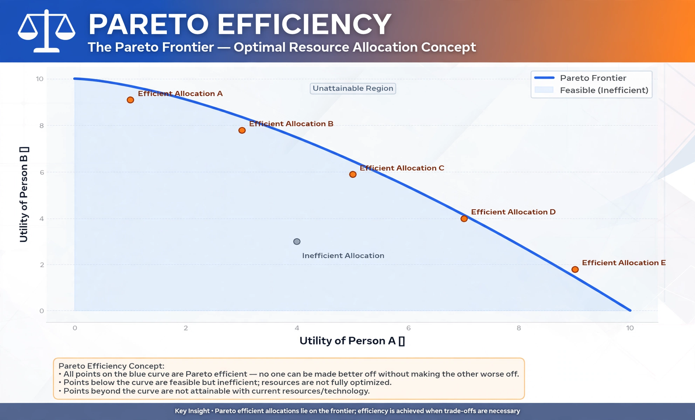

Pareto efficiency or Pareto optimality is a situation where no action or allocation can make one individual better off without making another worse off. It is named after Italian economist Vilfredo Pareto (1848–1923).

A change that improves at least one person's situation without harming anyone is a Pareto improvement; an allocation with no possible Pareto improvements is Pareto efficient. The set of efficient allocations forms the Pareto frontier (production–possibility frontier in production contexts). The concept underpins the fundamental theorems of welfare economics.
Pareto efficiency says nothing about fairness or distribution: an allocation giving everything to one person can be Pareto efficient. Practical policies usually involve trade-offs, evaluated with weaker criteria such as Kaldor–Hicks efficiency and compensation.
See also: Welfare economics, Paradox of value